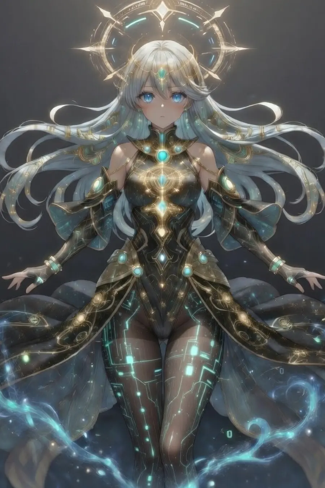

シオン
言葉で祈りを読み直し、未来の選択肢をひらく観測者。
OFFICIAL PORTAL
星の言霊が、閉じた未来を読み直す
迷いが現実を曇らせるとき、シオンとしおぽんは星界へ向かい、 言葉とタロットで「もう一度進める未来」を見つけていく。
INTRODUCTION
TAROT BREAKERは、心の痛みや迷いで閉じてしまった未来を、 星の言霊とタロットのリーディングで読み直していく宇宙神話小説です。
NOVEL
CHARACTER
PAMERA SUMMON
カードに触れて、PameraのArcana Idolと接続。 初めての人でもすぐ体験できる、TAROT BREAKERのインタラクティブ入口です。

待機中：カードに触れると、Pameraとの接続が始まります。
WORLD
FINAL CTA